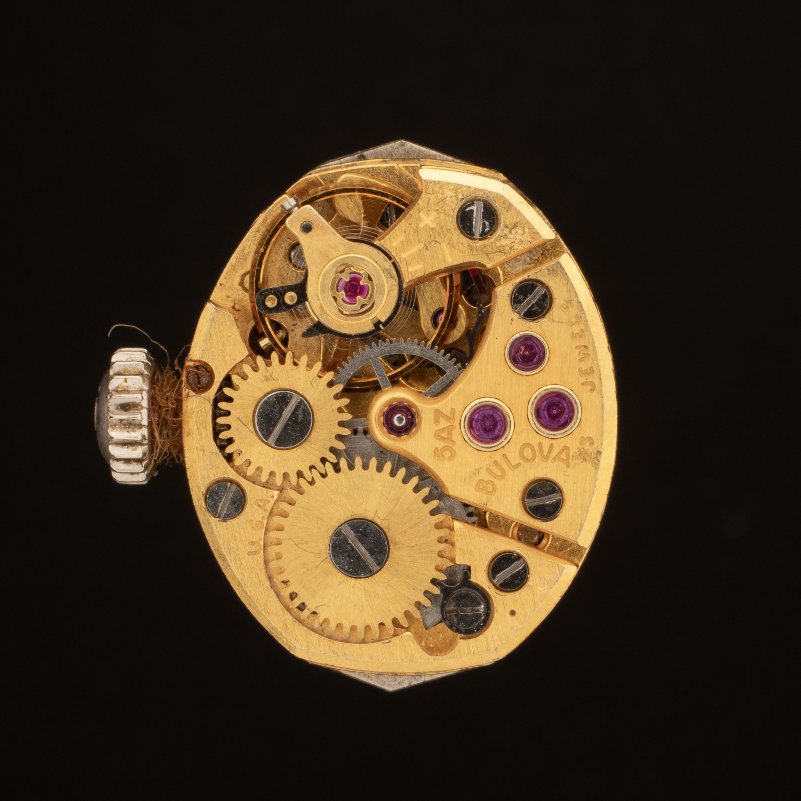
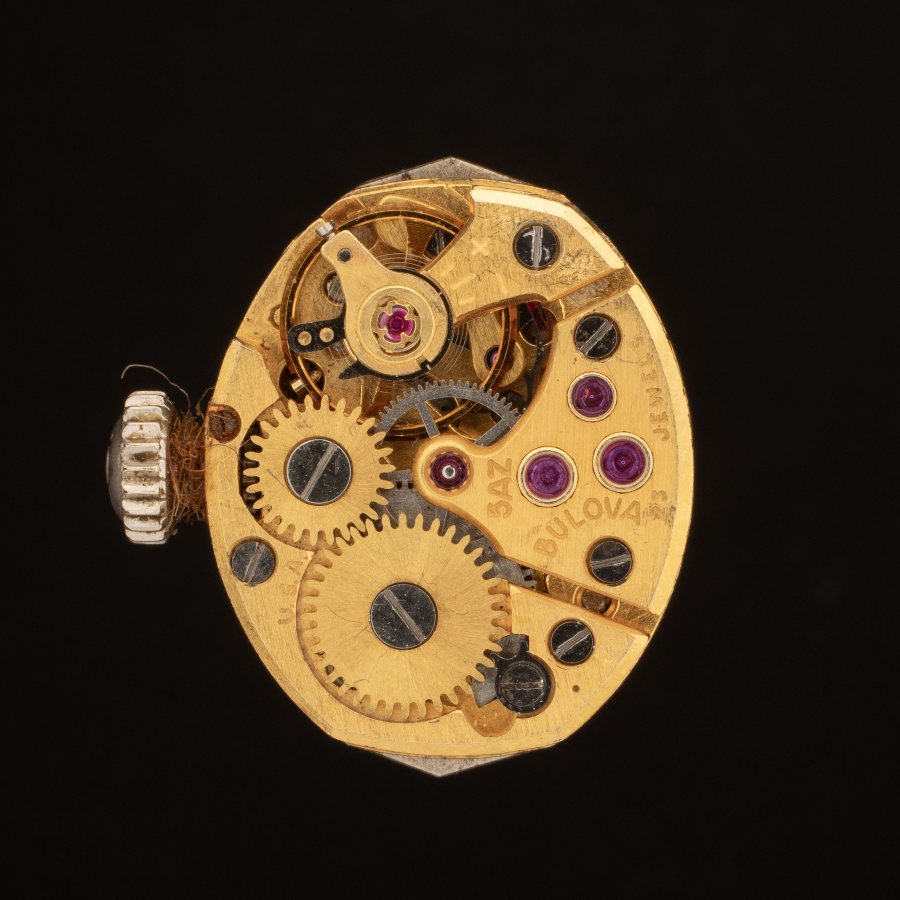
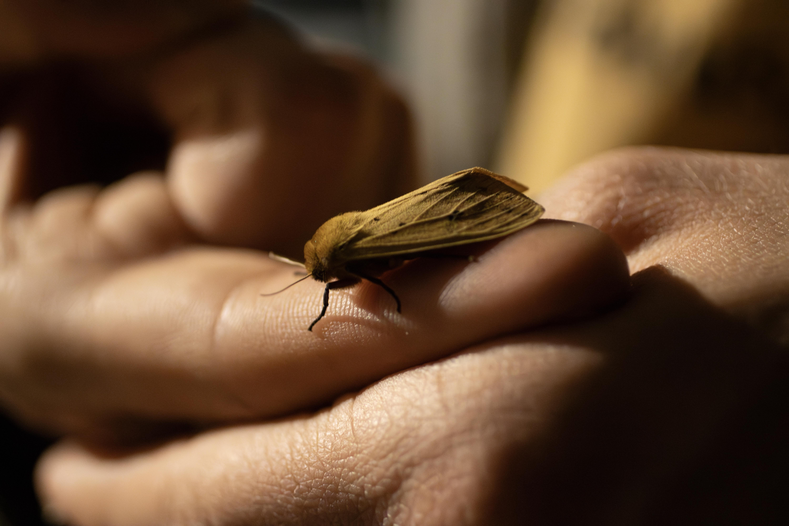
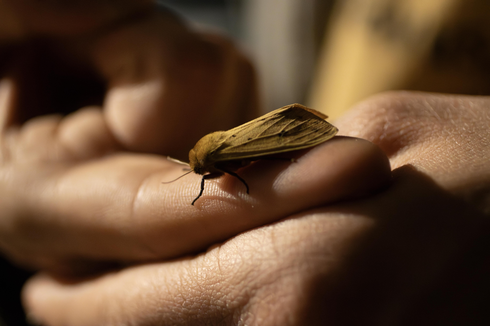
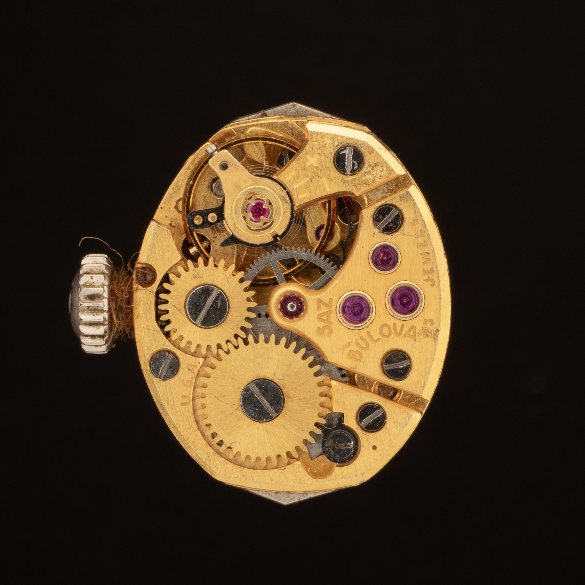
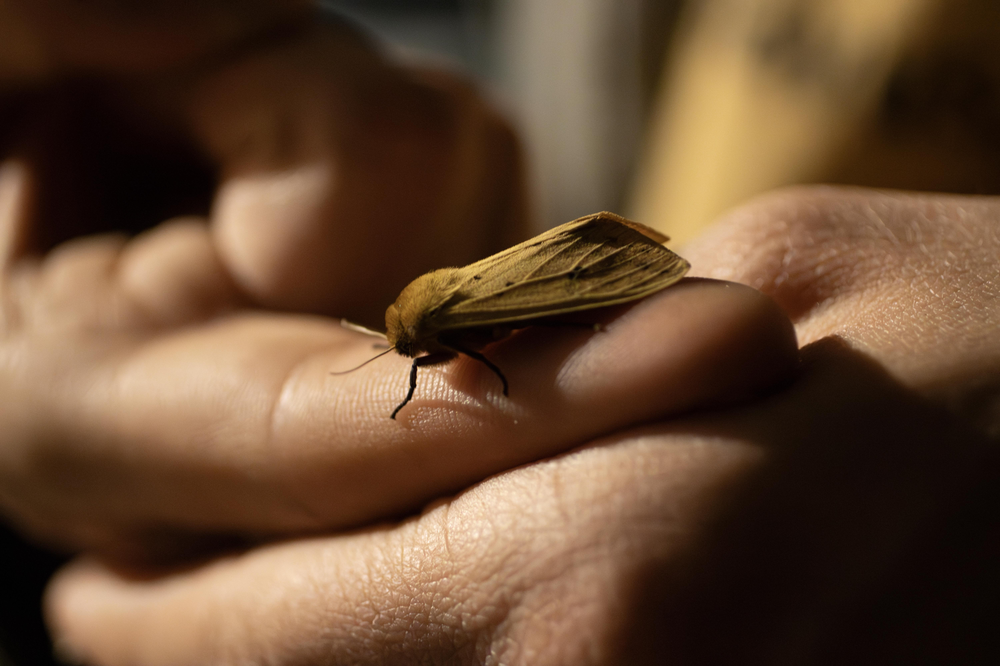

 

My artistic practice revolves around metalsmithing and jewelry fabrication. I work primarily in silver, copper, bronze, and gemstones, using both traditional fabrication techniques and modern technologies like computer-aided design and 3D printing. This results in nonorganic, geometric forms intended to be worn on the body.
My background in computer science deeply influences my work. I often approach design through a lens shaped by digital processes and a fascination with how technology can enhance or reshape craft.
I started metalsmithing at Carleton, so my work has been greatly shaped by the studio environment, my professors, and fellow students. I view my current body of work as a library of experiences, each piece a record of what I’ve learned, and each iteration built upon previous experiments.
I try to seek discomfort in the studio. If a project is easy, I usually don’t have an interest in doing it. I’m driven by the challenge of learning new skills and forcing myself to grow in unfamiliar territory.
Ultimately, I see metalsmithing as a site of both discipline and discovery. My goal is not to perfect a process, but to keep evolving, to remain curious, to stay uncomfortable, and to build work that challenges both me and the people who encounter it.

